Clutch Master Cylinder: Service and Repair
Clutch Master Cylinder ReplacementNOTE: Use fender covers to avoid damaging painted surfaces. Do not spill brake fluid on the vehicle; it may damage the paint. If brake fluid does contact the paint, wash it off immediately with water.
1. Remove the brake fluid from the clutch master cylinder reservoir with a syringe.
2. Make sure you have the anti-theft code for the audio unit or the navigation system, then write down the audio presets.
3. Disconnect the negative cable from the battery, then disconnect the positive cable.
4. Remove the battery.
5. Remove the driver's dashboard undercover.
6. Remove the air cleaner assembly.
7. Remove the battery base.
8. Pry out the lock pin (A), and pull the pedal pin (B) out of the yoke. Remove the master cylinder mounting nuts (C).
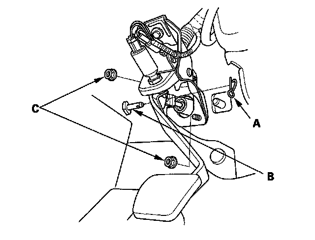
9. Remove the cowl cover and under-cowl panel.
10. Remove the clutch line bracket (A).
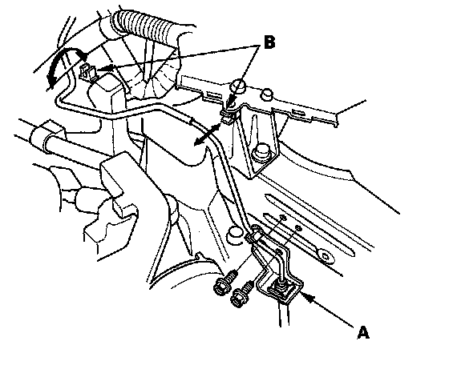
11. Remove the clutch line from the clamps (B).
12. Remove the clutch master cylinder (A) with the clutch line (B) and the reservoir hose (C).
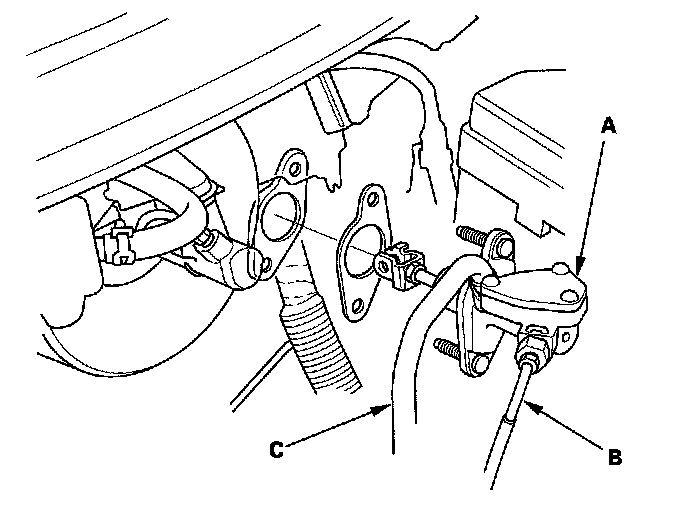
13. Disconnect the reservoir hose (A), then remove the retaining clip (B), and the clutch line (C) from the clutch master cylinder (D). Plug or wrap the end of the reservoir hose and the clutch line with a shop towel to prevent brake fluid from coming out.
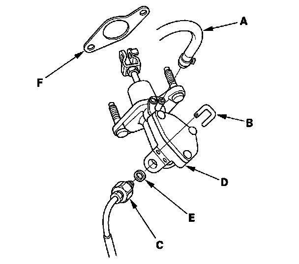
14. Remove the O-ring (E) and clutch master cylinder seal (F) from the clutch master cylinder.
15. Install the new O-ring (A) and clutch master cylinder seal (B) to the clutch master cylinder (C).
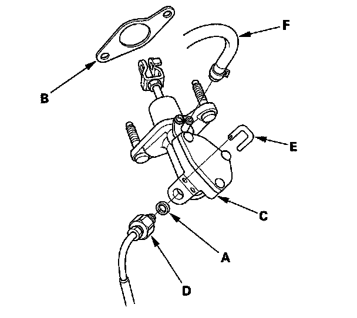
16. Install the clutch line (D), then install the new retaining clip (E). Connect the reservoir hose (F).
17. To prevent the retaining clip (A) from coming off, pry apart the tip of the retaining clip (B) with a screwdriver.
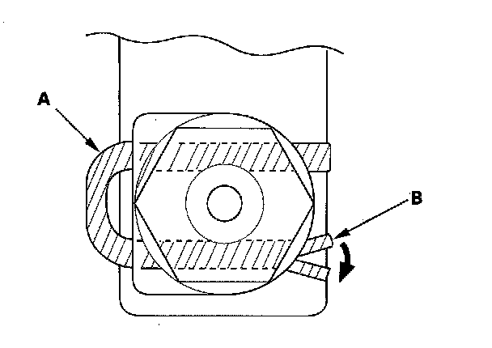
18. Install the clutch master cylinder (A) with the clutch line (B) and the reservoir hose (C).
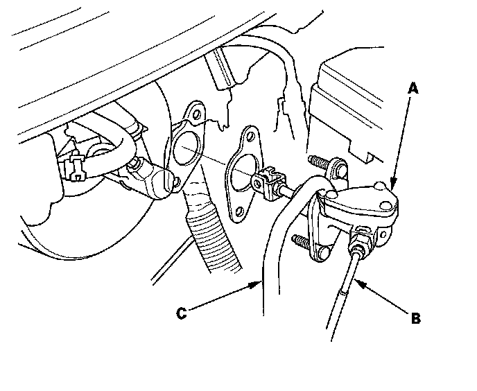
19. Install the clutch line to the clamps (A).
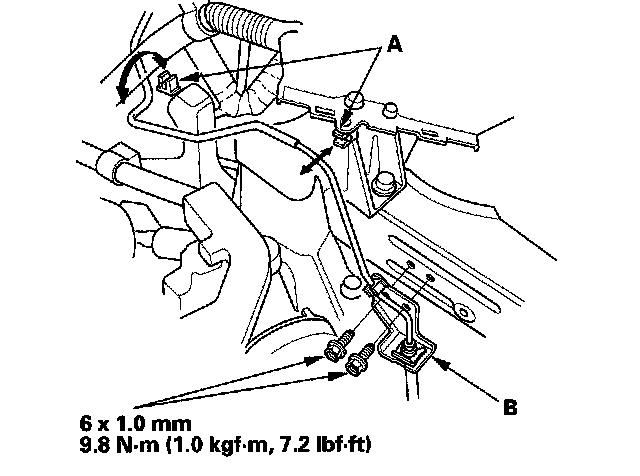
20. Install the clutch line bracket (B).
21. Make sure the hose clamps (A) are positioned on the master cylinder (B) and reservoir (C) as shown.
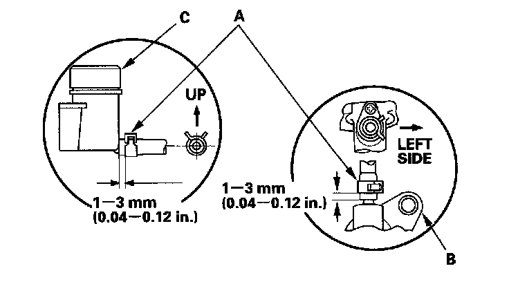
22. Install the cowl cover and under-cowl panel.
23. Install the master cylinder mounting nuts (A).
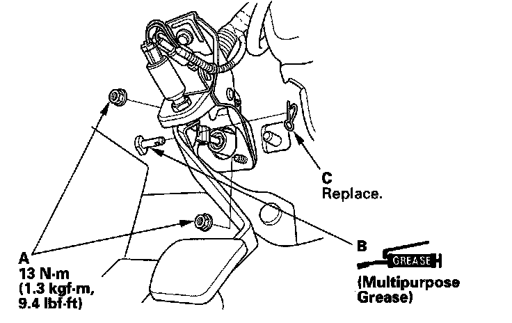
24. Apply grease to the pedal pin (B), and slide it into the yoke, then install a new lock pin (C).
25. Adjust the clutch pedal, clutch pedal position switch, and clutch interlock switch.
26. Bleed the clutch hydraulic system.
^ Attach a clear tube to the bleeder screw (A), and suspend the tube in a container of brake fluid. Loosen the bleeder screw to allow air to escape from the system. Then tighten the bleeder screw securely.
^ Make sure there is an adequate supply of fluid in the reservoir, then slowly pump the clutch pedal until there are no more bubbles in the bleeder tube.
^ It may be necessary to limit the movement of the release fork (B) with a block of wood to remove all the air from the system.
^ Do not reuse the drained fluid. Always use Honda DOT 3 Brake Fluid from an unopened container. Using a non-Honda brake fluid can cause corrosion and shorten the life of the system.
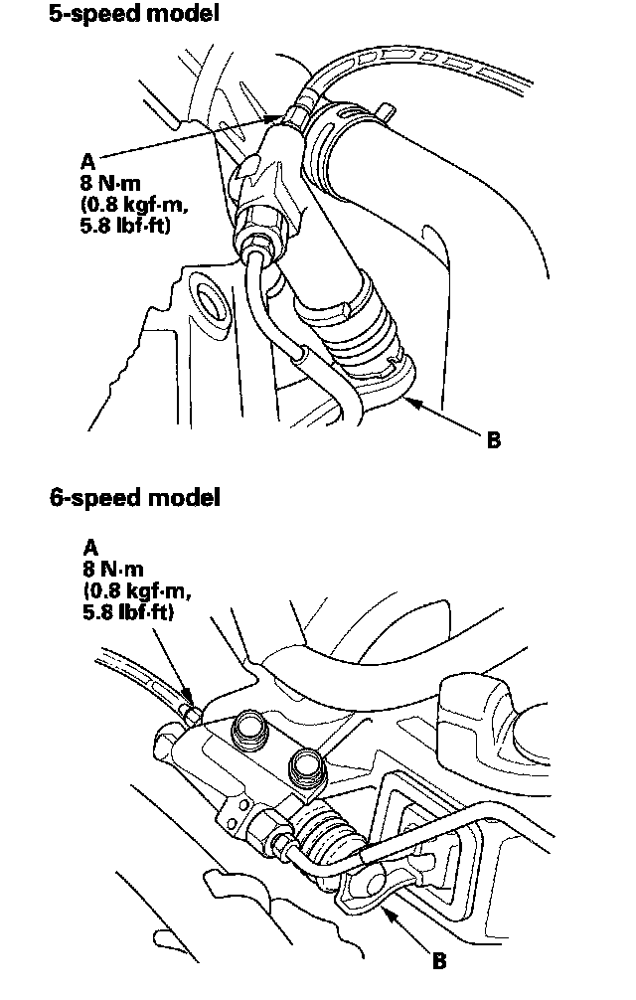
27. Refill the brake fluid in the reservoir to the MAX (upper) level line (A).
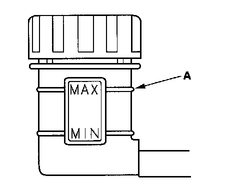
28. Install the battery base.
29. Install the air cleaner assembly.
30. Install the driver's dashboard undercover.
31. Install the battery. Clean the posts and cable terminals. Connect the positive cable to the battery, then connect the negative cable, and apply multipurpose grease to prevent corrosion.
32. Enter the anti-theft code for the audio unit or the navigation system, then enter the audio presets, and set the clock.
33. Do the power window control unit reset procedure.
34. Check the clutch operation, and check for leaks.
35. Test-drive the vehicle.